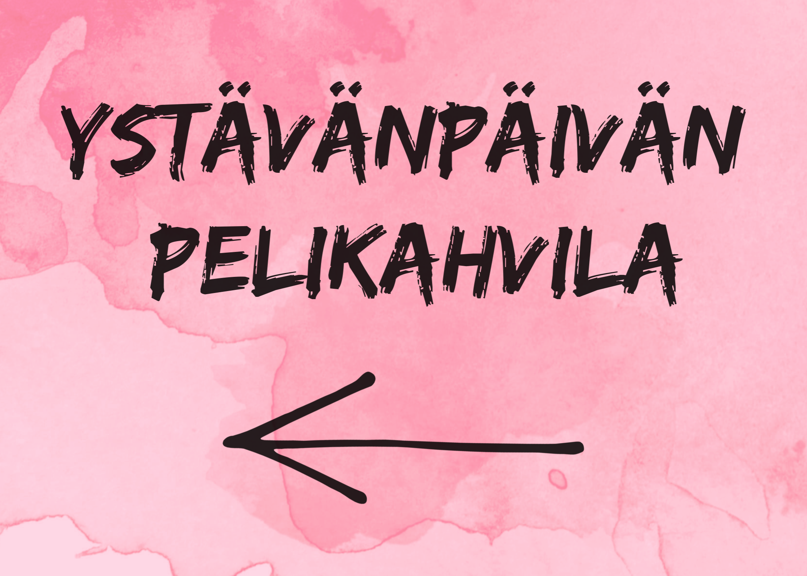
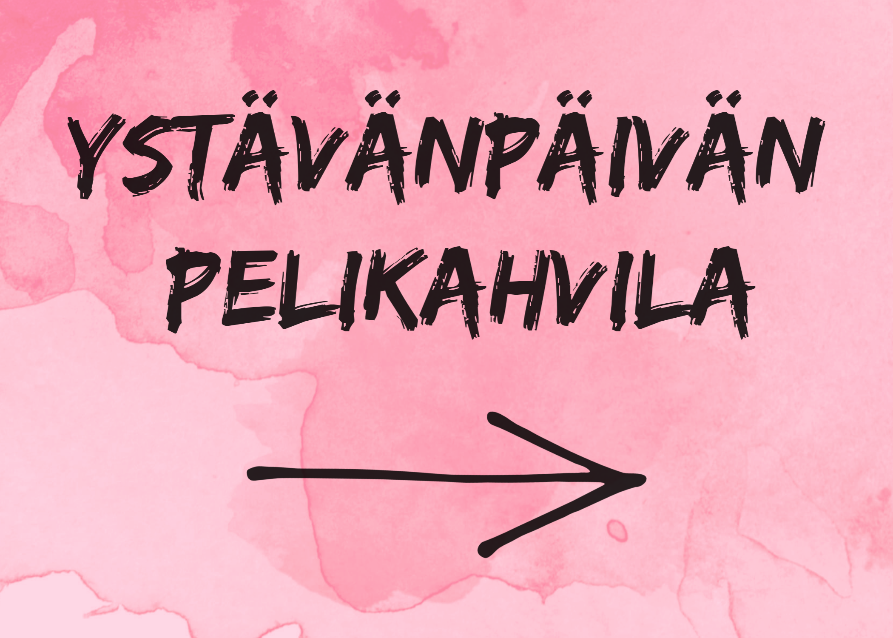

Mistä löydät pelikahvilaan?
Pelikahvilamme sijaitsee lukiorakennuksen ensimmäisessä kerroksessa luokassa L1050 (Kehittämö).
Lukion pääovilta tullessasi käänny oikealle ja kävele käytävän päähän saakka. Käytävän perällä oleva piano on heti kehittämön oven oikealla puolella. Lukiorakennuksessa on opasteita, joiden avulla löydät paremmin perille.
Alla olevista kuvista näet opasteet, joiden avulla löydät pelikahvilaan.
 